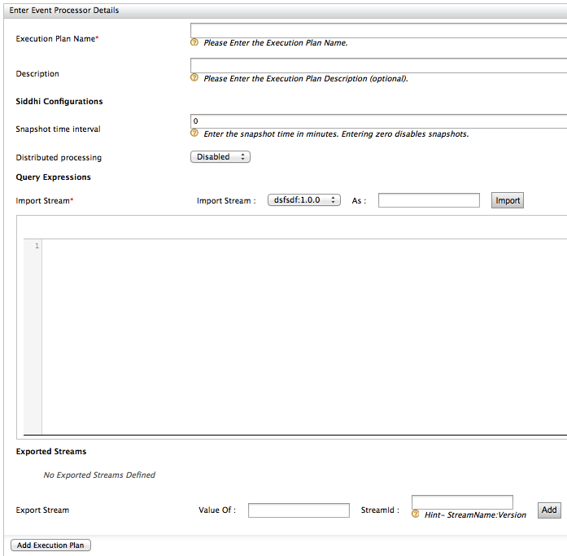
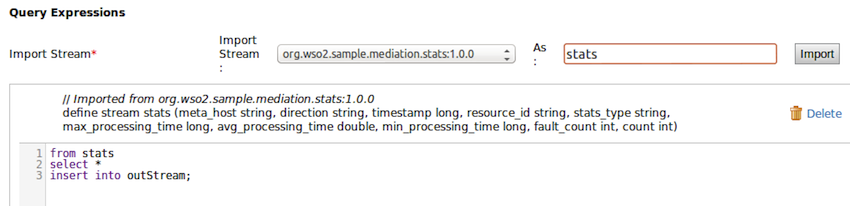
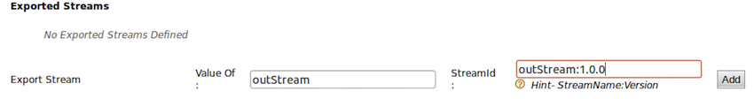

The fields in the above configuration are described below:
- Execution Plan Name : Can contain only alphanumeric characters and '_' character
- Description : This is optional
- Snapshot time interval : Defines how often the state of the processing engine should be persisted, which is used to restore after a system crash. The default value is 0, which disables this feature. If snapshot is enabled, you must start the CEP with the embedded Cassandra server enabled. To do this, specify -Ddisable.cassandra.server.startup=false option at server startup.
- Query expressions: See Siddhi Language Specification documentation on how to write
queries. When writing query expressions, you must import the required streams from
event builders. The As field maps the incoming stream to a stream
name suitable for the Siddhi processing engine. It can contain only alphanumeric
characters and '_' character.
In the text field that follows imported streams, you can enter any number of CEP statements, each ending with a semicolon. For example,

The Exported streams section allows you to expose the output streams from Siddhi to the event formatter with preferred stream IDs. For example,

For the StreamId, provide a character string that starts with an alphabetic because it is considered as a java variable in Siddhi. Stream Id is a combination of stream name and version. E.g., testStream:1.0.0.
Alternatively, you can specify an execution plan configuration using an XML file and save
it in <PRODUCT_HOME>/repository/deployment/server/executionplans
directory, which is the execution plan deployment directory. Since hot deployment is
enabled, you can simply add/remove files to deploy/undeploy from the server.
Create
the XML file with the following XML based configurations. Execution plan implementation
must start with <executionplan> root element as in the example
below: